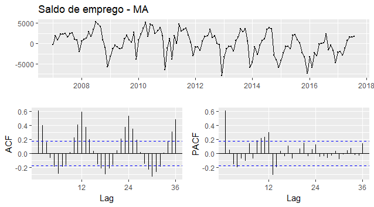
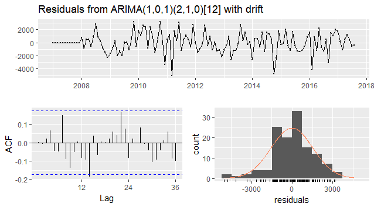
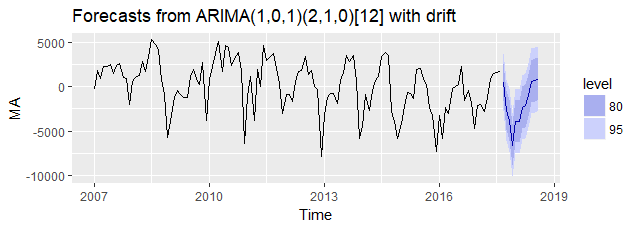

Prevendo o futuro com modelos ARIMA

ARIMA
Aplicações em R para previsão de séries temporais utilizando modelagem ARIMA a partir do pacote forecast.
Aplicação
As bibliotecas forecast e ggplot2 são necessárias, utilize os comandos install.packages('nome da biblioteca') e library(nome da biblioteca) para instalar e carregar as bibliotecas.
library(forecast) #Modelos de previsão (Hyndman and Khandakar, 2008)
library(ggplot2) #Elegant Graphics (Wickham, 2009)
Para este exemplo vamos importar um banco direto da internet que está hospedado aqui, são dados mensais do saldo de emprego do estado do Maranhão.
dados <- read.table("https://raw.githubusercontent.com/icaroagostino/ARIMA/master/dados/MA.txt", header=T)
attach(dados) #tranformando em objeto
MA <- ts(MA, start = 2007, frequency = 12) #tranformando em Séries Temporal
Visualização
ggtsdisplay(MA, main="Saldo de emprego - MA")

A série possui caracteristicas de sazonalidade aditiva com tendência moderada negativa, além disso a análise ACF permite evidenciar a presença de autocorrelação temporal entre as observações.
Ajuste do modelo
Para a estimação dos parametros e ajuste do modelo será utilizado a função auto.arima(), que utiliza o algoritimo desenvolvido e publicado por Hyndman e Khandakar (2008) que combina a aplicação de testes de raízes unitarias, minimização do AIC e MLE utilizando o procedimento stepwise. A função pertence a biblioteca forecast que atualmente é mais completa para previsão de séries temporais com aplicações em R. O modelo ajustado terá a notação usual ARIMA(p,d,q)(P,D,Q)[m] sendo que p representa o número de parâmetros autorregressivos, d a ordem de integração, q o número de parâmetros de médias móveis. Caso a série possua sazonalidade, além dos parâmetros já citados ainda terão P para o número de parâmetros autorregressivos sazonais, D a ordem de integração sazonal, Q o número de parâmetros de médias móveis sazonais, e [m] a ordem sazonal.
ARIMA_fit <- auto.arima(MA)
ARIMA_fit #sai o modelo ajustado
## Series: MA
## ARIMA(1,0,1)(2,1,0)[12] with drift
##
## Coefficients:
## ar1 ma1 sar1 sar2 drift
## 0.7076 -0.3409 -0.7236 -0.4268 -24.3796
## s.e. 0.1315 0.1734 0.0875 0.0862 13.9307
##
## sigma^2 estimated as 2708743: log likelihood=-1025.46
## AIC=2062.91 AICc=2063.68 BIC=2079.43
O modelo ajustado automaticamente considerou 1 parâmetro autorregressivo, 1 parâmetro de médias móveis, 2 parâmetros sazonais autorregressivos e 1 diferença sazonal de ordem 12 (meses), tais parâmetross podem e devem ser alterados a fim de buscar um melhor ajuste do modelo a partir do comando Arima(x, order = c(0, 0, 0), seasonal = c(0, 0, 0)), informe os parâmetros a serem estimados nos argumentos order e seasonal, lembrando que é possivel estimar diversos modelos concorrentes e decidir o melhor modelo pelos critérios de AIC e BIC.
Verificação dos résiduos
checkresiduals(ARIMA_fit)

Os resíduos gerados pelo modelo apresentaram caracteristicas de ruído branco.
Previsão
autoplot(forecast(ARIMA_fit, h = 12))

Obs.:
Os dados utilizados nesse exemplo são públicos, para mais detalhes baixe o script ARIMA.R que está neste repositório.
contato: icaroagostino@gmail.com